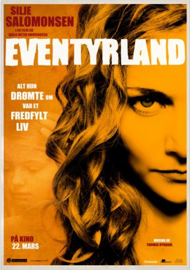

#5344 Abenteuerland
Alternativ: Scheinwelt
 
 IMDB-Wertung: 6.4 / 10
IMDB-Wertung: 6.4 / 10  Metascore: 0
Metascore: 0 
After serving 10 years in prison for murder, Jenny returns to society. She dreams of living a quiet life and of resuming her responsibilities as a mother, but soon dark shadows from the past start to appear. "It's Only Make Believe" is the story of a murder that never should have happened, of friends that never should have been trusted, and a debt that keeps on increasing for every down payment. Although Jenny has lost everything, she still has everything to win: her daughter. "It's Only Make Believe" is an exciting thriller and a heartfelt drama that marks a return to energetic and passionate filmmaking for Norwegian maverick director Arild Østin Ommundsen.
Jahr: 2013
Dauer: 92 Minuten
FSK:
Land: Norwegen Studio: ActionFilmTonspuren:
Untertitel:
Auflösung: 1080p (1920x1080) Größe: 6164 MB
Genre: Drama
Regisseur: Arild Østin Ommundsen
Drehbuch: Kent Jones
Soundtrack:
Darsteller:
 Vegar Hoel als Ådne
Vegar Hoel als Ådne- Silje Salomonsen als Jenny
- Tomas Alf Larsen als Gary
- Egil Birkeland als Eddie Vedder
- Fredrik S. Hana als Frank
- Ole Romsdal als Tønder
- Iben Østin Hjelle als Merete
- Kjell Breivik als Frank's father
- Tore Reidarsønn Kvam als Social worker
- Lene Heimlund Larsen als Claire
- Kjersti Østin Ommundsen als Gunn Oddny
- Thomas Skjørestad als Timmy Virkola
- Terje Torkildsen als Plumber
Datei: X:\2013(A-F)\Abenteuerland (2013, FSK, 1920x1080).mkv seit 17.01.2017
Festplatte: HD 2012(N-Z)-2013(A-H)
 Es gibt insgesamt 127 Filme in der Gruppe '2013(A-F)'
Es gibt insgesamt 127 Filme in der Gruppe '2013(A-F)'